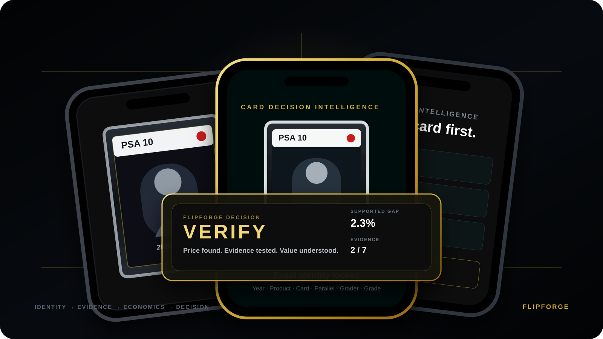
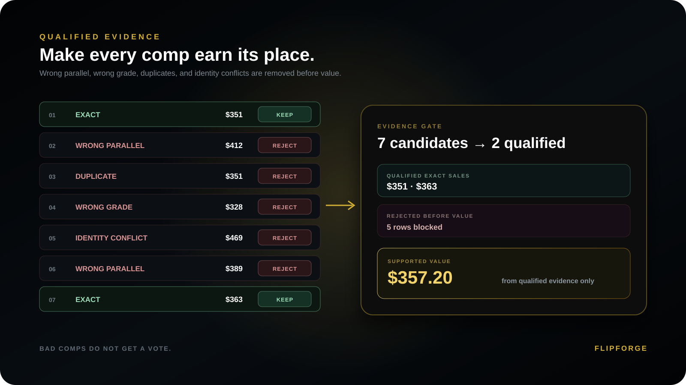
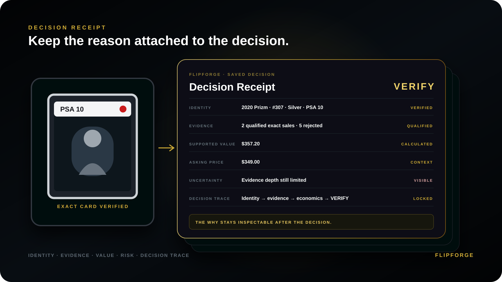

Evidence before emotion
Stop chasing prices.Start making decisions.
FlipForge checks the exact card, challenges the evidence, and tests the economics and risk before the price gets a vote.

Illustrative product visualization. No live sales, pricing, or current-market claims are shown.
Evidence intelligence
The price looked right.The evidence wasn't.
An attractive listing can hide the wrong parallel, a duplicate sale, or a mismatch in grade. FlipForge makes evidence prove that it belongs before it shapes the supported value.
- Detect the mismatchCard identity, product, grade and parallel are examined first.
- Qualify what countsOnly properly matched, governed evidence supports the conclusion.
- Expose uncertaintyWhen evidence is insufficient, FlipForge says VERIFY instead of guessing.


Decision intelligence
Make the decision.Keep the reason.
A market number alone cannot explain what was checked, rejected, supported or still missing. Decision Intelligence connects the conclusion back to its evidence trail.
- Identity intelligenceKnow which card the decision actually concerns.
- Evidence intelligenceSee why evidence qualified—or did not.
- Decision tracebackReopen the saved reasons instead of relying on memory.
Card decision intelligence
Before you buy.Know Why.
FlipForge checks the card, challenges the evidence, and explains the decision before you spend. Private Beta access is by application.